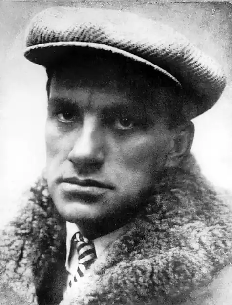
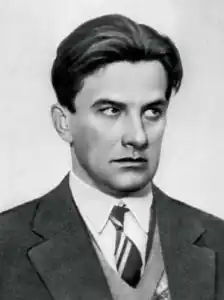

Володимир Володимирович Маяковський народився 19 липня 1893 року в місті Багдаді, що в тодішній Кутаїської губернії. Прославився як драматург, поет, кінорежисер і кіносценарист, журналіст і художник. Маяковський став одним з найбільш відомих радянських діячів мистецтва і символом епохи.
Володимир Маяковський народився у родині Володимира Костянтиновича Маяковського, який працював лісничим у Ериванське губернії. Мати, Олександра Олексіївна Павленко, була родом з кубанського козацького роду і перебралася в Кутаисскую губернію слідом за чоловіком.
У 1902 році Маяковського віддали на навчання в міську гімназію в Кутаїсі. Провчитися тут йому довелося всього чотири роки. У 1906 році помирає батько Маяковський-старший, після чого вся родина перебралася до Москви. У Москві Маяковський надходить в класичну гімназію. І тут йому не довелося провчитися повністю: у 1908 році майбутнього поета вигнали з гімназії через несплату грошей за навчання. Саме в цей період починається становлення Маяковського-революціонера. Покинувши гімназію, він знайомиться зі студентами, що поширюють революційні ідеї. Незабаром після цього Володимир стає членом РСДРП. Активну участь у роботі марксистів не могло не накликати неприємності: у 1908-1909 Маяковський тричі потрапляв за ґрати. Йому пред'явлені звинувачення у співпраці з анархістами-експропріаторами, в організації підпільної друкарні та сприяння втечі з Новинской в'язниці політв'язнів-жінок. В результаті слідства по всіх трьох справах Маяковський був звільнений як неповнолітній і за браком доказів. Тим не менш, 11 місяців до звільнення йому все ж довелося провести. Перебування у в'язниці є періодом початку творчого становлення Маяковського. Тут він пише свої перші вірші, які згодом викликали у нього не дуже позитивні емоції. Тим не менш, рукописна зошит з віршами часів "відсидки" – перша чернетка творів Володимира Володимировича. У 1910 році Маяковський виходить з в'язниці, а вже через рік починає дуже активно цікавитися живописом. Незабаром Московське училище живопису, ліплення і зодчества роздобув Володимира в якості студента. А в 1912 році його вірші починають публікуватися в футуристичних альманахах. Становлення Маяковського як поета переходить у нову стадію. І знову бунтарський характер не дав можливості Маяковському закінчити освіту: за участь у публічних виступах Володимира виключають і з Московського училища живопису. Незабаром після цього Маяковський відправляє просувати футуристичне мистецтво в маси по містах країни. Він подорожує з групою однодумців, але у творчості є вже цілком самостійним. Перша світова війна викликала активний протест Маяковського. Він створює ряд творів, в яких таврує ганьбою жорстокість і безглуздість війни. Створена в 1915 році п'єса "Хмара в штанях" – твір, в якому Маяковський пророкує швидку революцію, яка повинна очистити суспільство. П'єса стала поворотним етапом у творчості Володимира Володимировича – вона показала чітко сформульовану ідею про необхідність революції. Жовтнева революція, природно, була зустрінута Маяковським з великою радістю. Нова соціалістична дійсність була естетично осмислена поетом. Раніше ніякої соціальної перспективи Маяковський не мав, тепер же у своїх творах він закликає до боротьби за комуністичні ідеали. Футуризм Маяковського, незважаючи на комуністичну спрямованість, далеко не завжди подобався Леніну. Вождь світової революції не надто любив футуристів, з-за чого критика діставалася і творів Володимира Володимировича. Наприклад, була розкритикована поема "150 000 000", яку Ленін вважав надто незвичайною. У цей же період Маковський проявляє себе і як художник. У 1919 році, перебравшись до Москви, він приступає до створення серії агітаційних плакатів. За три роки їх кількість досягла 1 100. Ці плакати демонструють роботу досвідченого художника з помітною і лаконічній манерою вираження своєї думки. Сам Володимир називав себе "поетом-робітникам", трудящим пензлем на потреби революції. На початку 1920-х років Маяковський створює цілу низку творів, спрямованих на пропаганду світової революції. Риси футуризму в його творчості знаходять нові елементи. Поет стає одним з членом творчого об'єднання ЛЕФ (Лівий Фронт), де співпрацює з Б. Пастернаком, С. Третьяковим, Н. Асєєвом та іншими представниками літератури, філології та інших галузей мистецтв. У цей же період Маяковський плідно працює над створенням реклами і дизайну упаковки для "Резинотреста", "Моссельпрома" і інших торгових державних об'єднань. Маяковський-"дизайнер" добився великих успіхів, про що свідчить отримана на паризькій Виставці декоративно-прикладного мистецтва срібна медаль і почесний диплом. Поет же представляв свої досліди в рекламі не тільки як джерело заробітку, але і як спосіб вираження своїх ідей про перемогу революції. З 1923 року практично всі твори шикуються в стилі "драбинки", який залишається справжньою "візитною карткою" поета і зараз. "Драбинка" пояснювалася самим Маяковським як прийом, який потрібен, щоб донести ідею вірша до "середнього" читача, так як звичайній пунктуації для цього недостатньо. У 1920-х роках Маяковський працював відразу за декількома напрямками: працював кореспондентом цілого ряду газет Радянського Союзу, писав вірші (у тому числі і для дітей), створював агітаційні плакати. Часто бував за кордоном, де черпала ідеї для своїх "анти-буржуазних" віршів. Поет багато їздив по всій країні, читаючи свої вірші зі сцени. Його виступи обов'язково супроводжувалися цікавими імпровізаціями з читанням записок із залу і жартами, розраховані на невибагливий смак простих слухачів. До кінця 1920-х років Маяковський вирішив більше уваги приділяти драматургії. У цей час були написані одні з кращих його п'єс: "Клоп" і "Лазня". Ці твори – сатиричний опис реалій того часу. У п'єсах Маяковський застосував свій улюблений прийом: воскресіння і подорожі в майбутнє. Висміювання в "Клопе" бюрократизму та інших проблем накликало на Маяковського серйозну критику. Комусь зверху не сподобалося, що поет висміює ті недоліки, яких у Радянській державі, за офіційною версією, не існує. Посипалися різкі статті в газетах, гасла "Геть маяковщину". Прихильна до цього доля різко відвертається від поета. Його критикують за "попутничество", виключають з творчих об'єднань. В березні 1930 року Володимир Володимирович організував виставку-ретроспективу "20 років роботи", де розмістив свої твори. На виставку не звернули ніякої уваги навіть колишні колеги з творчим об'єднанням. Природно, відвернулося від поета і партійне керівництво. У цей час ніби всі напасті звалилися на Маяковського відразу: він терпить поразку в особистому житті, його постійно і дуже жорстко критикують, йому загрожує втрата голосу, а спектакль "Лазня" провалюється. Швидше за все, це і стало причиною самогубства Маяковського 14 квітня 1930 року. Незабаром після смерті поета від його творчості постаралися швидше відхреститися: його творчість потрапляє під негласну заборону. Лише в 1936 році, за клопотанням Лілі Брік перед Сталіним, заборону було знято. Відразу ж починають публікувати збірники творів Маяковського, його називають найкращим поетом епохи, створюють його музей. Йому віддають всілякі почесті, але – вже посмертно. Цікаві факти з життя Маяковського Знаменита "драбинка" Маяковського багатьма його колегами-поетами вважалася шахрайством. Поетів тоді платили відповідно з кількістю рядків. Маяковський все життя дуже сильно боявся мікробів і мив руки при кожному зручному випадку. Фобія розвинулася після того, як батько поета помер в результаті звичайного уколу голкою. Маяковський любив азартні ігри і під час поїздок по Європі вважав за краще проводити час за картковими столами. Одна з версій причин смерті поета – невдала гра в російську рулетку. Одного разу, програвшись в більярд, Маяковський розплатився довіреністю на отримання гонорару за свою збірку віршів. Текст вірша "Лиличке!" був використаний для створення пісні "Маяк" групою "Сплін".